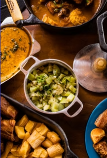
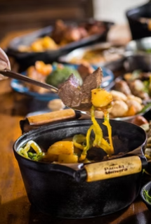
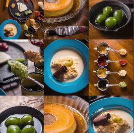

Tradicional Restaurante de Comida Mineira em Betim, Minas Gerais.


Quem Somos
O "Sítio Casarão" como era conhecido, foi construído pelo Sr. Luiz Dias e a Sra. Cláudia Dias já há algum tempo, um sonho que ao longo de muitos anos se tornou realidade. Agora o local está aberto ao público como "O Casarão Restaurante". Localizado na cidade de Betim, Minas Gerais, é um lugar pra cumê bem e viver uma experiência da época da vovó, é cada coisa boa que você ``num vai aguentá``. Você tem que vim aqui vê os ``trem`` sô... Temos museu com antiguidades e carros antigos sempre passam por aqui também. A cozinha é comandada por um povo ``bão dimais da conta``, a chef é a Lidiane Martins e seu esposo Alexandre Morais, que fazem um tanto de coisa boa também por aqui. Não é um lugar somente para cumê, é pra saborear, prosear, relaxar e ter uma verdadeira experiência com a gastronomia mineira raiz, e, antes de ir embora, tomar aquele cafezinho adoçado com rapadura, levantar da mesa e dizer: “que trem bão sô!”
Nossas Reservas São Feitas Pelo Whatsapp
Fotos de Trem di Cumê


